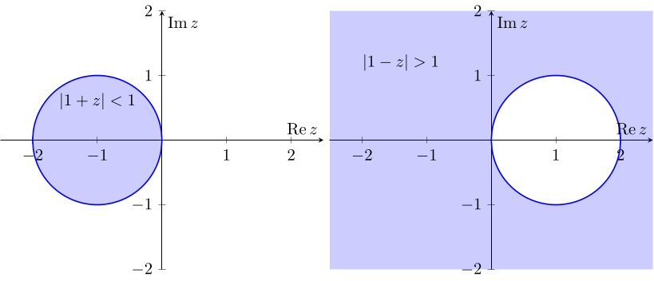
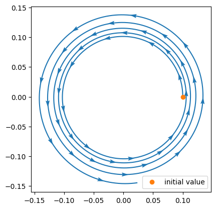
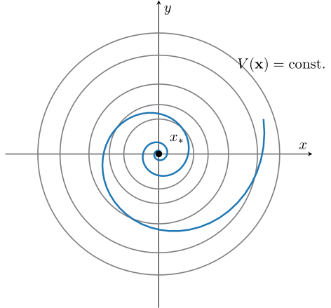
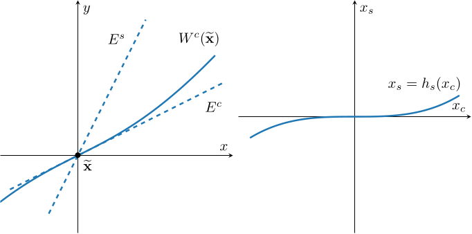

3. 安定性
力学系の解を明示的に表現できる場合は, その表現から解の時間発展に伴う挙動がわかる. 一方で, 多くの場合は解を表現できないときに, その挙動を調べることに興味がある. ここでは, 力学系の解の挙動を調べるための概念として 安定性 を導入することで, 平衡点付近における局所的な解の挙動を説明するための 安定性解析 の理論を紹介する.
3.1: 平衡点の安定性
数学において『安定性』という言葉は, "わずかな変化 (摂動) の影響" が十分に小さいと思える, という状況を表す. 力学系において, 安定性は平衡点からわずかに摂動した初期値が, 時間経過により平衡点周辺に留まり続けることと説明される. さらに, 平衡点からわずかに摂動した初期値が, 時間経過により平衡点に収束するならば 漸近安定 であると呼ばれる. 線形力学系 $\mathbf{x}'= A\mathbf{x}$ については, 行列 $A$ の固有値の実部の符号により $t\to\infty$ としたときの解 $\mathbf{x}(t)$ の収束, 発散が異なることがわかるが, ここではそのアイデアを説明する概念を導入する.
まずは安定性による平衡点の分類を紹介しよう.
- 相空間 $\mathbb{R}^d$ 上のフロー $\{\Phi_t\}_{t\in\mathbb{R}}$ が定める連続力学系の平衡点 $\mathbf{x}_*\in\mathbb{R}^d$ について,
- 任意の $\varepsilon\gt 0$ に対して, ある $\delta\gt 0$ が存在し, \[ \text{初期値 $\mathbf{x}_0$ が }\|\mathbf{x}_0-\mathbf{x}_*\| \lt \delta \text{ を満たす} \implies \|\Phi_t(\mathbf{x}_0) - \mathbf{x}_*\|\lt \varepsilon\quad\text{for all}\quad t\ge 0 \] が成立するとき, 平衡点 $\mathbf{x}_*$ は リアプノフ安定 (Lyapunov stable) である (もしくは単に 安定 である) という.
- 安定な平衡点 $\mathbf{x}_*$ について, ある $\widetilde{\delta}\gt0$ が存在し, \[ \text{初期値 $\mathbf{x}_0$ が }\|\mathbf{x}_0-\mathbf{x}_*\| \lt \widetilde{\delta} \text{ を満たす} \implies\lim_{t\to\infty}\|\Phi_t(\mathbf{x}_0)-\mathbf{x}_*\|=0 \] が成立するとき, 平衡点 $\mathbf{x}_*$ は 吸引的 (attracting) であるという.
- 写像 $F: \mathbb{R}^d\to\mathbb{R}^d$ が定める離散力学系 $\mathbf{x}_{n+1} = F(\mathbf{x}_n)$ の平衡点 $\mathbf{x}_*\in\mathbb{R}^d$ について,
- 任意の $\varepsilon\gt 0$ に対して, ある $\delta\gt 0$ が存在し, \[ \text{初期値 $\mathbf{x}_0$ が }\|\mathbf{x}_0-\mathbf{x}_*\| \lt \delta \text{ を満たす}\implies \|F^n(\mathbf{x}_0) - \mathbf{x}_*\|\lt \varepsilon\quad\text{for all}\quad n = 0, 1, \dots \] が成立するとき, 平衡点 $\mathbf{x}_*$ は リアプノフ安定 (Lyapunov stable) である (もしくは単に 安定 である) という.
- 安定な平衡点 $\mathbf{x}_*$ について, ある $\widetilde{\delta}\gt0$ が存在し, \[ \text{初期値 $\mathbf{x}_0$ が }\|\mathbf{x}_0-\mathbf{x}_*\| \lt \widetilde{\delta} \text{ を満たす} \implies\lim_{n\to\infty}\|F^n(\mathbf{x}_0)-\mathbf{x}_*\|=0 \] が成立するとき, 平衡点 $\mathbf{x}_*$ は 吸引的 (attracting) であるという.
- 安定かつ吸引的な平衡点は 漸近安定 (asymptotically stable) であるという.
- 安定でない平衡点は 不安定 (unstable) であるという.
- 安定だが漸近安定でない平衡点は 中立安定 (neutrally stable) であるということがある.
例としてロジスティック方程式 \[ x' = ax(1-x) \] を考える, ただし $a\gt 0$ とする. 右辺を $f(x) = ax(1-x)$ とおくと, 平衡点は $f(x_*)=0$ となる $x_* = 0, 1$ である.
ここで, $f(x)\lt 0$ ならば $x(t)$ は時間経過で減少し, $f(x)\gt0$ ならば $x(t)$ は増加する. 従って, $x_* = 1$ に十分近い任意の初期値から時間発展すると, $x(t)$ は平衡点 $x_* = 1$ に近づいていくことがわかる (下図). これは, $x_* = 1$ が漸近安定な平衡点であることを意味している.
一方で, 平衡点 $x_* = 0$ の近くの初期値から時間発展すると, 解は $x_* = 0$ から離れるように動くため, $x_* = 0$ は不安定な平衡点である.

例えば \[ x' = x^2 \] を考えると, 上と同様のアイデアより平衡点 $x_*=0$ より左に初期値がある場合には解は $x_*$ に収束し, 右に初期値がある場合には解は発散することが言える. このように, 同じ方向 (次元) において, 一方からは近づくが反対側からは離れていくような挙動をする場合, 平衡点は 半安定 (semi-stable) であるということがある.
上の例は一次元連続力学系の平衡点 $x_*$ における安定性が $f'(x_*)$ の正負と関連していることを意味している. 後ほど, これと同様のアイデア (線形安定性解析) により, 一般に $d$ 次元連続力学系の平衡点の安定性を判定するテクニックを述べる. また, 離散力学系 $\mathbf{x}_{n+1} = F(\mathbf{x}_n)$ の平衡点の安定性も, 写像 $F$ の性質を調べることで判定できる.
線形安定性解析について詳しく説明する前に, まずは $d$ 次元線形力学系 \[ \mathbf{x}' = A\mathbf{x},\qquad \mathbf{x}_{n+1} = A\mathbf{x}_n \] の平衡点 $\mathbf{x}_* = \mathbf{0}$ の安定性について解説しよう.
- 正方行列 $A\in\mathbb{R}^{d\times d}$ を用いて表される線形連続力学系 $\mathbf{x}' = A\mathbf{x}$ について,
- 行列 $A$ の 全ての 固有値 $\lambda_i$ が $\operatorname{Re}\lambda_i\lt 0$ を満たすならば, $\mathbf{x}_* = \mathbf{0}$ は漸近安定な平衡点である.
- 行列 $A$ の固有値 $\lambda_i$ に $\operatorname{Re}\lambda_i\gt 0$ となるものが 一つでも あれば, $\mathbf{x}_* = \mathbf{0}$ は不安定な平衡点である.
- 正方行列 $A\in\mathbb{R}^{d\times d}$ を用いて表される線形離散力学系 $\mathbf{x}_{n+1} = A\mathbf{x}_n$ について,
- 行列 $A$ の 全ての 固有値 $\lambda_i$ が $|\lambda_i|\lt 1$ を満たすならば, $\mathbf{x}_* = \mathbf{0}$ は漸近安定な平衡点である.
- 行列 $A$ の固有値 $\lambda_i$ に $|\lambda_i|\gt 1$ となるものが 一つでも あれば, $\mathbf{x}_* = \mathbf{0}$ は不安定な平衡点である.
- 線形連続力学系に関しては, 2.1: 線形力学系と行列指数関数 において, \[ \text{$A$ の全ての固有値の実部が負}\iff e^{tA}\to O \quad (t\to\infty) \] の成立に言及したが, これを用いると \[ \text{$A$ の全ての固有値の実部が負}\implies \text{全ての初期値 $\mathbf{x}_0$ に対し } \lim_{t\to\infty}e^{tA}\mathbf{x}_0 = \mathbf{0} \] が得られる. 一方で, もしも行列 $A$ の固有値 $\lambda_i$ であって実部が正であるものが存在するならば, $e^{tA}$ により指数的に増大する方向が存在するため平衡点 $\mathbf{x}_* = \mathbf{0}$ は不安定である.
- 線形離散力学系に関しては, 正方行列 $A$ のスペクトル半径 $\rho(A)$ について \[ \rho(A)\lt 1 \iff \lim_{n\to\infty}A^n\to O \] であることから従う.
二次元線形連続力学系の例として \[ A = \begin{pmatrix} a & b \cr -b & a \end{pmatrix} \] に対し線形力学系 $\mathbf{x}' = A\mathbf{x}$ を考える, ただし $b\neq0$ とする (このとき $A$ は正則であり, $\mathbf{x}' = A\mathbf{x}$ の平衡点は $\mathbf{0}$ のみである). このとき, 行列 $A\in\mathbb{R}^{2\times 2}$ の固有値は \[ \lambda_1 = a+ib,\quad \lambda_2 = a-ib \] である. 特に $\operatorname{Re}\lambda_1 = \operatorname{Re}\lambda_2 = a$ に注意. また, 対応する固有ベクトルは \[ \mathbf{v}_1 = \begin{pmatrix} 1 \cr i \end{pmatrix}, \quad \mathbf{v}_2 = \begin{pmatrix} 1 \cr -i \end{pmatrix} \] であり, 従って一般解は (以前にも計算したように) \[ \mathbf{x}(t) = c_1\operatorname{Re}(e^{\lambda_1t}\mathbf{v}_1) + c_2\operatorname{Im}(e^{\lambda_1t}\mathbf{v}_1) = \begin{pmatrix} e^{at}(c_1\cos bt + c_2\sin bt) \cr e^{at}(-c_1\sin bt + c_2\cos bt) \end{pmatrix} \] であり, 特に $e^{at}$ の部分に注目すると, $a = \operatorname{Re}\lambda_1 = \operatorname{Re}\lambda_2$ の符号 (固有値の実部の符号) によって $t\to\infty$ とした際の挙動が異なることが予想できる.
例えば,
- $(a, b) = (-10^{-3}, 1)$ のときは $a\lt 0$ であり, 平衡点は漸近安定,
- $(a, b) = (10^{-3}, 1)$ のときは $a\gt 0$ であり, 平衡点は不安定
である. また, $(a, b) = (0, 1)$ のとき, この例では平衡点は中立安定となる. 実際に $a=-10^{-3}$, $0$, $10^{-3}$ の場合の相図を順に描画すると以下のようになる (特に平衡点 $\mathbf{x} = 0$ 付近で, 平衡点に近づく, 近づきも離れもしない, 離れるという解の挙動の違いが確かに現れている):


なお, 上の $1$ つ目および $3$ つ目の例のように, 解が時間経過により平衡点の周囲を渦巻くような挙動をするとき, 平衡点は 渦状点 (もしくは スパイラル) であるということがある.
ところで, 数値計算手法に対しても "安定性" と呼ばれる概念がいくつか存在する. ここでは 絶対安定領域 および A-安定性 について解説しよう. 一次元線形連続力学系 \[ x' = \lambda x \quad (\operatorname{Re}\lambda\lt 0) \] について, $x(t) = e^{\lambda t}x(0)$ より $x_*=0$ は漸近安定である. この性質が前進オイラー法により導出される離散力学系 \[ x_{n+1} = (1 + \tau \lambda)x_n \] で再現されるかを考えると, \[ |1+\tau\lambda|\lt 1 \] が $x_*=0$ の漸近安定性の条件であることがわかる, ただし $\tau\gt 0$ は時間刻み幅である. このことは, 前進オイラー法で $x_*=0$ が漸近安定となる性質を再現しようとすると, $\lambda\in\mathbb{C}$ に応じて $\tau$ に追加の仮定が必要となることを意味している. このように, 元の連続力学系のある平衡点が漸近安定であるからといって, 時間離散化により得られる離散力学系でも漸近安定であるとは限らない.
一般に, ある数値計算手法をテスト方程式 \[ x' = \lambda x \] に適用することで \[ x_{n+1} = R(\tau\lambda)x_n \] という離散力学系が導出されるとき, この $R(z)$ を 安定性関数 と呼ばれることがある. 安定性関数は, \[ |R(z)| \lt 1 \] が満たされれば, テスト方程式の漸近安定な平衡点 $x_*=0$ が, 離散化後にも漸近安定な平衡点になることを意味するが, \[ S = \{z\in\mathbb{C} : |R(z)|\lt 1\} \] を, その数値計算手法の 絶対安定領域 (region of absolute stability) という. さらに, 絶対安定領域が複素数平面上の左半平面をすべて含むとき, 数値計算手法は A-安定 (A-stable) であるという.
A-安定でない方法では, 元の問題が漸近安定であっても, 時間刻み幅 $\tau$ に安定性のための制約が生じる. 一方, A-安定な方法では, テスト方程式について $\operatorname{Re}\lambda\lt 0$ なら任意の $\tau>0$ に対して漸近安定性が保たれるという利点がある. ただし多くの A-安定な数値計算手法は陰的であり, 計算コストが大きくなってしまうため, やはり万能というわけでは無い.
後退オイラー法が A-安定であることを証明せよ.
$x' = \lambda x$ に対する後退オイラー法は \[ x_{n+1} = \underbrace{(1-\tau\lambda)^{-1}}_{=R(\tau\lambda)}x_n \] であり, 従って後退オイラー法の絶対安定領域は \[ S = \{z\in\mathbb{C}: |(1-z)^{-1}|\lt 1\} \] であり, 特に $\operatorname{Re}z\lt 0$ ならば \[ |1-z|^2 = (1-\operatorname{Re}z)^2 + (\operatorname{Im}z)^2 \gt 1 \] より \[ \{z\in\mathbb{C}: \operatorname{Re}z\lt 0\} \subset \{z\in\mathbb{C} : |1-z|\gt 1\} = S \] が得られる.
なお, 前進オイラー法と後退オイラー法の絶対安定領域を図示するとそれぞれ以下の左図, 右図のようになる.

この一次元テスト方程式による議論は, 多次元線形力学系とも密接に関係する. 実際, \[ \mathbf x'=A \mathbf x \] に安定性関数 $R$ をもつ時間離散化を適用すると, 典型的には \[ \mathbf x_{n+1}=R(\tau A)\mathbf x_n \] が得られるが, 行列 $A$ の固有値 $\lambda_i$ に対し $R(\tau A)$ の固有値は $R(\tau\lambda_i)$ となる. 従って, 元の線形力学系の漸近安定性を時間離散化後にも再現するためには, 全ての固有値 $\lambda_i$ に対し \[ \tau\lambda_i\in S \] が成立することが重要となる.
それでは, 次に非線形力学系 \[ \mathbf{x}' = \mathbf{f}(\mathbf{x}),\qquad \mathbf{x}_{n+1} = F(\mathbf{x}_n) \] に対する 線形安定性解析 のテクニックを紹介しよう. 線形安定性解析では, $C^1$ 級の非線形写像が局所的には線形写像で近似できることを利用する.
具体例として $2$ つの $C^1$ 級関数 $f(x, y)$, $g(x, y)$ を用いて表される非線形自励系と, その平衡点 $\mathbf{x}_*$ について考える: \[ \mathbf{x}' = \mathbf{f}(\mathbf{x}) = \begin{pmatrix} f(x, y) \cr g(x, y) \end{pmatrix},\qquad \mathbf{x}_* = \begin{pmatrix} x_* \cr y_* \end{pmatrix}. \] 関数 $f(x,y)$, $g(x,y)$ の $\mathbf{x}_*$ 周りでのテイラー展開を考えると, 剰余項 $R_1$, $R_2$ を用いて \[ \left\{\begin{array}{rl} f(x, y) &= f(\mathbf{x}_*) + \dfrac{\partial f}{\partial x}(\mathbf{x}_*)(x-x_*) + \dfrac{\partial f}{\partial y}(\mathbf{x}_*)(y-y_*) + R_1(x, y), \cr g(x, y) &= g(\mathbf{x}_*) + \dfrac{\partial g}{\partial x}(\mathbf{x}_*)(x-x_*) + \dfrac{\partial g}{\partial y}(\mathbf{x}_*)(y-y_*) + R_2(x, y) \end{array}\right. \] が得られる. これを行列を用いて表記すると \[ \mathbf{f}(\mathbf{x}) = D \mathbf{f}(\mathbf{x}_*) (\mathbf{x}-\mathbf{x}_*) + \mathbf{R}(\mathbf{x}) \] となるが, ここで \[ D\mathbf{f}(\mathbf{x}_*) = \begin{pmatrix} \dfrac{\partial f}{\partial x}(\mathbf{x}_*) & \dfrac{\partial f}{\partial y}(\mathbf{x}_*) \cr \dfrac{\partial g}{\partial x}(\mathbf{x}_*) & \dfrac{\partial g}{\partial y}(\mathbf{x}_*) \end{pmatrix}\in\mathbb{R}^{2\times 2} \] は $C^1$ 級写像 $\mathbf{f}$ のヤコビ行列であり, 剰余項 $\mathbf{R}(\mathbf{x})$ は \[ \dfrac{\|\mathbf{R}(\mathbf{x})\|}{\|\mathbf{x}-\mathbf{x}_*\|}\to\mathbf{0} \quad\text{as}\quad \mathbf{x}\to\mathbf{x}_*, \] つまり $\mathbf{R}(\mathbf{x}) = o(\|\mathbf{x}-\mathbf{x}_*\|)$ である. 従って \[ \mathbf{x}' = D\mathbf{f}(\mathbf{x}_*)(\mathbf{x}-\mathbf{x}_*) + o(\|\mathbf{x}-\mathbf{x}_*\|) \] であり, 平衡点 $\mathbf{x}_*$ 付近での解の挙動は \[ \mathbf{x}' = D \mathbf{f}(\mathbf{x}_*) (\mathbf{x}-\mathbf{x}_*) \] の解の挙動に近いと思って良いだろう. ここで $\mathbf{y} = \mathbf{x} - \mathbf{x}_*$ と変数変換すると, 上は \[ \mathbf{y}' = D \mathbf{f}(\mathbf{x}_*)\mathbf{y} \] という線形力学系である.
このアイデアに相当することを厳密に証明したものが, 以下に述べるハートマン=グロブマンの定理である. ただし, ここでは以下の定理の内容も証明も詳細には説明しない:
また, この結果に関連して用語を一つ導入しておこう:
- ベクトル場 $\mathbf{f}: \mathbb{R}^d\to\mathbb{R}^d$ は $C^1$ 級であるとする. 自励系 $\mathbf{x}' = \mathbf{f}(\mathbf{x})$ の平衡点 $\mathbf{x}_*$ に対し, $\mathbf{x}_*$ におけるヤコビ行列 $D\mathbf{f}(\mathbf{x}_*)\in\mathbb{R}^{d\times d}$ に実部が $0$ となる固有値が 存在しない とき, 平衡点 $\mathbf{x}_*$ は 双曲型平衡点 (hyperbolic equilibrium point) という.
- 写像 $F: \mathbb{R}^{d\times d}$ は $C^1$ 級であるとする. 離散力学系 $\mathbf{x}_{n+1} = F(\mathbf{x}_n)$ の平衡点 $\mathbf{x}_*$ に対し, $\mathbf{x}_*$ におけるヤコビ行列 $DF(\mathbf{x}_*)\in\mathbb{R}^{d\times d}$ に絶対値が $1$ となる固有値が 存在しない とき, 平衡点 $\mathbf{x}_*$ は双曲型平衡点という.
- 双曲型でない平衡点は, 非双曲型 (non-hyperbolic) であるという.
ハートマン=グロブマンの定理は, 非線形力学系の双曲型平衡点 $\mathbf{x}_*$ 付近での解の挙動は, 線形化方程式の平衡点付近での解の挙動と対応することを意味している. また, 実は離散力学系でも同様に, 離散力学系 \[ \mathbf{x}_{n+1} = F(\mathbf{x}_n) \] の双曲型平衡点 $\mathbf{x}_*$ 付近における解の挙動は, 対応する線形化問題 \[ \mathbf{x}_{n+1} = DF(\mathbf{x}_*)\mathbf{x}_n \] の平衡点 $\mathbf{0}$ 付近の解の挙動と対応する. このように非線形力学系の平衡点の安定性を調べるテクニックを 線形安定性解析 という. これについて, 後から参照しやすいように定理という形で整理しておく:
- ベクトル場 $\mathbf{f}:\mathbb{R}^d\to\mathbb{R}^d$ が $C^1$ 級であるとする.
このとき, 自励系 $\mathbf{x}' = \mathbf{f}(\mathbf{x})$ の平衡点 $\mathbf{x}_*$ におけるヤコビ行列
\[
D\mathbf{f}(\mathbf{x}_*) = \begin{pmatrix}
\dfrac{\partial f_1}{\partial x_1}(\mathbf{x}_*) & \dots & \dfrac{\partial f_1}{\partial x_d}(\mathbf{x}_*) \cr
\vdots & \ddots & \vdots \cr
\dfrac{\partial f_d}{\partial x_1}(\mathbf{x}_*) & \dots & \dfrac{\partial f_d}{\partial x_d}(\mathbf{x}_*)
\end{pmatrix}\in\mathbb{R}^{d\times d}
\] について, 以下が成立する:
- $D\mathbf{f}(\mathbf{x}_*)$ の全ての固有値 $\lambda_i$ が $\operatorname{Re}\lambda_i\lt 0$ を満たすならば, 平衡点 $\mathbf{x}_*$ は漸近安定である.
- $D\mathbf{f}(\mathbf{x}_*)$ の固有値 $\lambda_i$ に $\operatorname{Re}\lambda_i \gt 0$ となるものが一つでもあれば, 平衡点 $\mathbf{x}_*$ は不安定である.
- $D\mathbf{f}(\mathbf{x}_*)$ の全ての固有値 $\lambda_i$ が $\operatorname{Re}\lambda_i \le 0$ を満たし, かつ $\operatorname{Re}\lambda_i = 0$ となるものが存在するならば, 平衡点 $\mathbf{x}_*$ の安定性は線形安定性解析だけでは一般には判定できない.
- 写像 $F:\mathbb{R}^d\to\mathbb{R}^d$ が $C^1$ 級であるとする.
このとき, 離散力学系 $\mathbf{x}_{n+1} = F(\mathbf{x}_n)$ の平衡点 $\mathbf{x}_*$ におけるヤコビ行列 $DF(\mathbf{x}_*)$ について, 以下が成立する:
- $DF(\mathbf{x}_*)$ の全ての固有値 $\lambda_i$ が $|\lambda_i|\lt 1$ を満たすならば, 平衡点 $\mathbf{x}_*$ は漸近安定である.
- $DF(\mathbf{x}_*)$ の固有値 $\lambda_i$ に $|\lambda_i| \gt 1$ となるものが一つでもあれば, 平衡点 $\mathbf{x}_*$ は不安定である.
- $DF(\mathbf{x}_*)$ の全ての固有値 $\lambda_i$ が $|\lambda_i| \le 1$ を満たし, かつ $|\lambda_i| = 1$ となるものが存在するならば, 平衡点 $\mathbf{x}_*$ の安定性は線形安定性解析だけでは一般には判定できない.
ロジスティック写像 \[ x_{n+1} = ax_n(1-x_n) \] を考える, ただし $0\lt a\le 4$ とする. 右辺を $F(x_n)$ とおくと, 平衡点は $x_* = F(x_*)$ を満たす $x_* = 0, 1-a^{-1}$ の二つであり, $F'(x) = a(1-2x)$ より \[ F'(0) = a,\qquad F'(1-a^{-1}) = 2 - a \] である. 従って, 平衡点 $x_* = 0$ は $a\lt 1$ ならば漸近安定, $a\gt 1$ ならば不安定, $a=1$ のときは線形安定性解析のみでは判定できない. 一方, 平衡点 $x_* = 1-a^{-1}$ は $1\lt a\lt 3$ ならば漸近安定, そうでなければ不安定であり, $a=1, 3$ のときは線形安定性解析のみでは判定できない.
以前に紹介した, グラフ反復法によるロジスティック写像の解の挙動のプロットを以下に再掲する (左から $a=1.2$, $2.4$ および $3.6$ の場合):

非線形力学系 \[ \left\{\begin{array}{rl} x' &= x(2-x-y) \cr y' &= x-y \end{array}\right. \] の平衡点を求め, 各平衡点における安定性を判定せよ.
上の非線形力学系を \[ \mathbf{x}' = \mathbf{f}(\mathbf{x}) = \begin{pmatrix} x(2-x-y) \cr x-y \end{pmatrix} \] と表記することにすると, 平衡点は $\mathbf{f}(\mathbf{x}_*) = \mathbf{0}$ を満たす $\mathbf{x}_*$ であり, 具体的には \[ \mathbf{x}_{*}^{(1)} = (0,0),\quad \mathbf{x}_*^{(2)} = (1,1) \] の $2$ 点である. ヤコビ行列を計算すると \[ D\mathbf{f}(\mathbf{x}) = \begin{pmatrix} 2-2x-y & -x \cr 1 & -1 \end{pmatrix},\quad \] なので, 各平衡点において \[ D\mathbf{f}(\mathbf{x}_*^{(1)}) = \begin{pmatrix} 2 & 0 \cr 1 & -1 \end{pmatrix},\quad D\mathbf{f}(\mathbf{x}_*^{(2)}) = \begin{pmatrix} -1 & -1 \cr 1 & -1 \end{pmatrix} \] が得られる. いま, $D\mathbf{f}(\mathbf{x}_*^{(1)})$ の固有値は $\lambda=2, -1$ であり, (実部が) 正の固有値が含まれるため, 平衡点 $\mathbf{x}_*^{(1)}$ は不安定である. 一方, $D\mathbf{f}(\mathbf{x}_*^{(2)})$ の固有値は $\lambda=-1\pm i$ であり, 全ての固有値の実部が負であるため, 平衡点 $\mathbf{x}_*^{(2)}$ は漸近安定である.
線形安定性解析だけでは安定性を判定 できない 例として, 二次元非線形連続力学系 \[ \mathbf{x}' = \mathbf{f}(\mathbf{x}) = \begin{pmatrix} -y + x(x^2+y^2) \cr x + y(x^2+y^2) \end{pmatrix}, \] を考える. まず, $\mathbf{x}_* = \mathbf{0}$ が平衡点であることは明らかであり, またヤコビ行列が \[ D\mathbf{f}(\mathbf{x}) = \begin{pmatrix} 3x^2+y^2 & -1+2xy \cr 1+2xy & x^2+3y^2 \end{pmatrix} \] であることから, この平衡点 $\mathbf{x}_*$ に対応する線形化方程式は \[ \mathbf{x}' = D\mathbf{f}(\mathbf{0})(\mathbf{x}-\mathbf{0}) = \begin{pmatrix} 0 & -1 \cr 1 & 0 \end{pmatrix}\mathbf{x} \] であり, $D\mathbf{f}(\mathbf{0})$ の固有値は $\lambda = \pm i$ である. つまり全ての固有値の実部が $0$ 以下であり, また実部が $0$ である固有値が存在しているため, 線形安定性解析では安定性を判定できない. ちなみに, 線形化方程式の解は \[ \begin{pmatrix} x \cr y \end{pmatrix} = \begin{pmatrix} c_1\cos t + c_2\sin t \cr -c_1\sin t + c_2\cos t \end{pmatrix} \] であり, 円周上を回り続けるものになり, 線形化方程式の 平衡点 $\mathbf{x}_*$ は中立安定である. 一方で, 元の非線形力学系の解は非線形項の影響で同一円周上に留まり続けることができず, 結果的に元の非線形力学系の平衡点 $\mathbf{x}_*$ は中立安定ではない. 以下に数値計算の結果を掲載する:

なお, この問題に関しては, 極座標変換 \[ \left\{\begin{array}{rl} x &= r\cos\theta, \cr y &= r\sin\theta \end{array}\right. \] を用いることでも安定性を調べることができる ($r\gt 0$ に注意). 実際に計算すると, \[ \mathbf{x}' = \begin{pmatrix} \cos\theta & -r\sin\theta \cr \sin\theta & r\cos\theta \end{pmatrix}\begin{pmatrix} r' \cr \theta' \end{pmatrix} \] であることから, \[ \begin{array}{rl} \begin{pmatrix} r' \cr \theta' \end{pmatrix} &= \begin{pmatrix} \cos\theta & -r\sin\theta \cr \sin\theta & r\cos\theta \end{pmatrix}^{-1}\mathbf{x}' \cr &= \dfrac{1}{r}\begin{pmatrix} r\cos\theta & r\sin\theta \cr -\sin\theta & \cos\theta \end{pmatrix}\begin{pmatrix} -y + x(x^2+y^2) \cr x + y(x^2+y^2) \end{pmatrix} \cr &= \dfrac{1}{r}\begin{pmatrix} r\cos\theta & r\sin\theta \cr -\sin\theta & \cos\theta \end{pmatrix}\begin{pmatrix} -r\sin\theta + r^3\cos\theta \cr r\cos\theta + r^3\sin\theta \end{pmatrix} \cr &= \begin{pmatrix} r^3 \cr 1 \end{pmatrix} \end{array} \] であり, 特に $r' = r^3\gt 0$ であることから, この自励系の解は時間経過により常に原点から離れるように動くことがわかる. 従って, 平衡点 $\mathbf{x}_* = \mathbf{0}$ は不安定である.
3.2: リアプノフの安定性定理
線形安定性解析は, 非線形力学系の平衡点の安定性を調べるテクニックとして非常に有用だが, 非双曲型平衡点の安定性を判断できない場合もある. そこで, 安定性を調べるための異なる方法として, ここでは リアプノフの安定性定理 を紹介する.
ベクトル場 $\mathbf{f}:\mathbb{R}^d\to\mathbb{R}^d$ は $C^1$ 級であるとする. このとき, 自励系 $\mathbf{x}' = \mathbf{f}(\mathbf{x})$ の平衡点 $\mathbf{x}_*\in\mathbb{R}^d$ に対し, 平衡点の近傍 $U$ 上の $C^1$ 級関数 $V:U\to\mathbb{R}$ であって, 以下を満たすものが存在するならば, 平衡点 $\mathbf{x}_*$ は安定である:
- $V(\mathbf{x}_*) = 0$,
- 任意の $\mathbf{x}\neq \mathbf{x}_*$ に対し $V(\mathbf{x}) \gt 0$,
- 任意の $\mathbf{x}\neq \mathbf{x}_*$ に対し $\nabla V(\mathbf{x})\cdot \mathbf{f}(\mathbf{x})\le 0$.
また, 上の $3$ つ目の条件の代わりに,
- 任意の $\mathbf{x}\neq \mathbf{x}_*$ に対し $\nabla V(\mathbf{x})\cdot\mathbf{f}(\mathbf{x})\lt 0$
が満たされるならば, 平衡点 $\mathbf{x}_*$ は漸近安定である.
条件を満たす関数 $V$ は (存在するならば) 平衡点 $\mathbf{x}_*$ における リアプノフ関数 (Lyapunov function) という. また, $\nabla V(\mathbf{x})\cdot \mathbf{f}(\mathbf{x})\le 0$ の代わりに $\nabla V(\mathbf{x})\cdot\mathbf{f}(\mathbf{x})\lt 0$ を満たすリアプノフ関数は 狭義リアプノフ関数 (strict Lyapunov function) と呼ばれることがある. リアプノフ関数 (狭義リアプノフ関数) は以下の性質を満たしている:
- 関数 $V$ は平衡点 $\mathbf{x}_*$ で最小値 $V(\mathbf{x}_*) = 0$ を達成する.
- $V$ は連続なので, 任意の $\alpha\gt 0$ に対しある $\delta\gt 0$ が存在し, \[ \|\mathbf{x} - \mathbf{x}_*\|\lt \delta \implies |V(\mathbf{x}) - V(\mathbf{x}_*)| = V(\mathbf{x}) \lt \alpha. \]
- 自励系の解 $\mathbf{x}(t)$ に対し, $\mathbf{x}(t)\in \mathbb{R}^d\backslash\{\mathbf{x}_*\}$ ならば \[ \dot{V}(\mathbf{x}) = \dfrac{d}{dt}V(\mathbf{x}(t)) = \nabla V(\mathbf{x}(t))\cdot \mathbf{x}'(t) = \nabla V(\mathbf{x}(t))\cdot\mathbf{f}(\mathbf{x}(t)) \le 0 \quad (\text{もしくは } \lt 0) \] が成立し, また関数 $\nabla V\cdot\mathbf{f}$ が連続であることから, 解 $\mathbf{x}(t)$ が時間経過により動くとき, $V(\mathbf{x}(t))$ の値は $t$ について単調減少 (もしくは狭義単調減少) する.
このような関数 $V$ は, この自励系のエネルギーに例えられる. このエネルギーが平衡点において最小化を達成し, かつ解 $\mathbf{x}(t)$ の時間経過とともにエネルギーが増加しない (もしくは減少する) とき, 直感的には解 $\mathbf{x}(t)$ は平衡点付近に留まる (もしくは平衡点に近づいていく) ことを意味している.
この定理は安定性の十分条件を与えるものであって, 必要十分条件ではないことに注意.
- (安定性)
- 任意の $\varepsilon\gt 0$ に対し, 中心 $\mathbf{x}_*$, 半径 $\varepsilon$ の開球 $B_{\varepsilon}(\mathbf{x}_*)$ を考える. この境界上における関数 $V$ の最小値 (極値定理より存在する) を $\alpha$ とおくと, 条件より $\alpha\gt 0$ である. 従って, $V$ の性質より, ある $\delta\gt 0$ が存在し, $\delta \lt \varepsilon$ と \[ V(\mathbf{x}) \lt \alpha\quad\text{for all}\quad \mathbf{x}\in B_{\delta}(\mathbf{x}_*) \] が成立する.
- いま, 初期値 $\mathbf{x}_0\in B_{\delta}(\mathbf{x}_*)$ に対する解 $\mathbf{x}(t)$ が時間経過により動くとき, $V(\mathbf{x}(t))$ の値は単調減少するため, 特に $V(\mathbf{x}(t))\ge\alpha$ となることはない. このことは, $\mathbf{x}(t)$ が $B_{\varepsilon}(\mathbf{x}_*)$ の境界に到達することはない ($\mathbf{x}(t)$ は $B_{\varepsilon}(\mathbf{x}_*)$ の内部にとどまり続ける), ということを意味しているため, \[ \|\mathbf{x}_0 - \mathbf{x}_*\|\lt \delta \implies \|\mathbf{x}(t) - \mathbf{x}_*\|\lt \varepsilon\quad\text{for all}\quad t\ge 0 \] が得られる.
- (漸近安定性)
- 任意の $\mathbf{x}\neq \mathbf{x}_*$ に対し, 代わりに $\nabla V(\mathbf{x})\cdot\mathbf{f}(\mathbf{x})\lt 0$ の成立を仮定した場合も, 上と同様に安定であることは良い.
- あとは吸引的であること, つまりある $\widetilde{\delta}\gt 0$ が存在し, 任意の $\widetilde{\varepsilon}\gt 0$ に対しある $T\gt 0$ が存在し, \[ \|\mathbf{x}_0-\mathbf{x}_*\|\lt \widetilde{\delta} \implies \|\mathbf{x}(t)-\mathbf{x}_*\|\lt \widetilde{\varepsilon}\quad \text{for all}\quad t\gt T \] を証明すれば良い.
- まず, $\mathbf{x}(t)$ を初期値とした解の挙動を考えると, 上の安定性の証明と同様の手順により, 任意の $\widetilde{\varepsilon}\gt 0$ に対し, ある $\gamma\gt 0$ が存在し \[ \|\mathbf{x}(T)-\mathbf{x}_*\|\lt \gamma \implies \|\mathbf{x}(t)-\mathbf{x}_*\|\lt \widetilde{\varepsilon}\quad\text{for all}\quad t\gt T \] が成立する.
- あとは, ある $\widetilde{\delta}\gt 0$ が存在し, 任意の $\widetilde{\gamma}\gt 0$ に対しある $T\gt 0$ が存在し \[ \|\mathbf{x}_0-\mathbf{x}_*\|\lt \widetilde{\delta} \implies \|\mathbf{x}(T) - \mathbf{x}_*\|\lt \widetilde{\gamma} \] が成立することを示せば (特に $\widetilde{\gamma}$ が上のような $\gamma$ の場合も成立するため) 吸引的であることが証明される.
- これを背理法で証明しよう: すなわち任意の $\widetilde{\delta}\gt0$ に対し,
\[
\text{ある $\widetilde{\gamma}\gt 0$ が存在し, 任意の $T\gt 0$ に対し}\quad \|\mathbf{x}(T)-\mathbf{x}_*\|\ge \widetilde{\gamma}
\] を満たす初期値 $\mathbf{x}_0\in B_{\widetilde{\delta}}(\mathbf{x}_*)$ の存在を仮定する.
このとき,
- $\mathbf{x}\neq \mathbf{x}_*$ における $V$ の正値性より, ある $\widetilde{\alpha}\gt 0$ が存在し $V(\mathbf{x}_0)\lt \widetilde{\alpha}$ が成立する.
- 平衡点 $\mathbf{x}_*$ の安定性より, ある $R\gt \widetilde{\delta}\gt \widetilde{\gamma}$ が存在し, $\mathbf{x}(t) \in \overline{B_R(\mathbf{x}_*)}$ が成立する.
- 任意の $\mathbf{x}\in K = \{\mathbf{x}\in\mathbb{R}^d : \widetilde{\gamma}\le \|\mathbf{x}-\mathbf{x}_*\|\le R\}$ に対し $\nabla V(\mathbf{x})\cdot \mathbf{f}(\mathbf{x})\lt 0$ である.
- $K$ がコンパクトであることから, ある $\widetilde{\beta}\gt 0$ が存在し, 自励系の解 $\mathbf{x}(t)$ に対し \[ \nabla V(\mathbf{x}(t))\cdot\mathbf{f}(\mathbf{x}(t)) \lt -\widetilde{\beta}\quad \text{for all}\quad t\gt 0 \] が成立する.
- 以上と微積分学の基本定理より, 任意の $T\gt 0$ に対し \[ \begin{array}{rl} 0\lt V(\mathbf{x}(T)) &= V(\mathbf{x}_0) + \displaystyle\int_0^T \dfrac{d}{dt}V(\mathbf{x}(t))~dt \cr &= V(\mathbf{x}_0) + \displaystyle\int_0^T \nabla V(\mathbf{x}(t))\cdot\mathbf{f}(\mathbf{x}(t))~dt \cr &\lt \widetilde{\alpha} + \displaystyle\int_0^T -\widetilde{\beta}~ds \cr &= \widetilde{\alpha} - T\widetilde{\beta} \end{array} \] が成立することになるが, この不等式は $T \gt \widetilde{\alpha}/\widetilde{\beta}$ において成立しないため矛盾する.
以下に $V(\mathbf{x}) = \dfrac{1}{2}\|\mathbf{x}\|^2$ の等高線と力学系の解の軌道のイメージ図を掲載する. 解の軌道が, 時間経過によりリアプノフ関数の値を小さくする方向に進む場合, 最終的にリアプノフ関数が最小値を達成する点, つまり平衡点 $\mathbf{x}_*$ に収束する様子を表している.

一次元非線形連続力学系 \[ x' = f(x) = -x^3 \] の平衡点は $x_* = 0$ のみである. この平衡点における安定性は, 線形安定性解析だけでは判定することはできない. 一方で, 例えば \[ V(x) = \dfrac{1}{2}x^2 \] と定めると, この $V$ は
- $V(x_*) = 0$,
- 任意の $x\neq x_*$ に対し $V(x) \gt 0$,
- 任意の $x\neq x_*$ に対し $V'(x)f(x) = -x^4 \lt 0$
を満たすことを確かめられるため, $V$ はこの自励系の狭義リアプノフ関数であることがわかり, 狭義リアプノフ関数が存在することから, 平衡点 $x_* = 0$ は漸近安定であることがわかる.
二次元非線形力学系 \[ \mathbf{x}' = \mathbf{f}(\mathbf{x}) = \begin{pmatrix} -(x+y)(x^2+y^2) \cr (x-y)(x^2+y^2) \end{pmatrix} \] の平衡点 $\mathbf{x}_* = \mathbf{0}$ が非双曲型平衡点であることを確認せよ. また, \[ V(\mathbf{x}) = \dfrac{1}{2}\|\mathbf{x}\|^2 \] がこの連続力学系の平衡点 $\mathbf{x}_* = \mathbf{0}$ に対する狭義リアプノフ関数であることを確認し, $\mathbf{x}_*=\mathbf{0}$ が漸近安定な平衡点であることを示せ.
まず, 右辺 $\mathbf{f}(\mathbf{x})$ は線形項を持たないため $D\mathbf{x}(\mathbf{0}) = O$ であり, その固有値は $\lambda=0$ のみであることから, $\mathbf{x}_*=\mathbf{0}$ は非双曲型平衡点である. 従って, この平衡点における安定性は, 線形安定性解析だけでは判定することはできない. 一方で, 上の $V(\mathbf{x})$ に対して,
- $V(\mathbf{x}_*) = 0$,
- 任意の $\mathbf{x}\neq \mathbf{x}_*$ に対し $V(\mathbf{x}) \gt 0$,
- 任意の $\mathbf{x}\neq \mathbf{x}_*$ に対し \[ \nabla V(\mathbf{x})\cdot \mathbf{f}(\mathbf{x}) = \begin{pmatrix} x \cr y \end{pmatrix}\cdot\begin{pmatrix} -(x+y)(x^2+y^2) \cr (x-y)(x^2+y^2) \end{pmatrix} = -(x^2+y^2)^2 \lt 0 \]
を確かめられるため, $V$ はこの自励系の狭義リアプノフ関数であることがわかり, 狭義リアプノフ関数が存在することから, 平衡点 $\mathbf{x}_* = \mathbf{0}$ は漸近安定であることがわかる.
$C^1$ 級関数 $E: \mathbb{R}^d\to\mathbb{R}$ に対して, $E$ がある点 $\mathbf{x}_*$ で最小値 $E(\mathbf{x}_*) = 0$ を達成し, その近傍 $U$ 上で \[ E(\mathbf{x}) \gt E(\mathbf{x}_*) \qquad (\mathbf{x}\in U\backslash\{\mathbf{x}_*\}) \] であると仮定する. いま, $\mathbf{f}(\mathbf{x}) = -\nabla E(\mathbf{x})$ のとき, つまり \[ \mathbf{x}' = -\nabla E(\mathbf{x}) \] という力学系を 勾配系 (gradient system) もしくは 勾配流 (gradient flow) という. このとき, $E$ はエネルギーと呼ばれる.
ベクトル $-\nabla E(\mathbf{x})$ は $E$ が最も急速に減少する方向を表しているため, 勾配系は状態 $\mathbf{x}(t)$ がエネルギーを最も急速に減少させる方向に時間発展する. このような性質のため, 勾配系はしばしばポテンシャルエネルギーにより記述される物理現象に対する数値モデルとして利用される. 特に, 勾配系のエネルギーとして, 物理現象から定義されるものがしばしば利用される.
勾配系に対し, エネルギー $E(\mathbf{x})$ はリアプノフ関数である: 実際, $E$ が最小値 $E(\mathbf{x}_*) = 0$ を達成するという仮定と, \[ \nabla V(\mathbf{x})\cdot \mathbf{f}(\mathbf{x}) = \nabla E(\mathbf{x})\cdot (-\nabla E(\mathbf{x})) = -\|\nabla E(\mathbf{x})\|^2 \le 0 \] であることからわかる. さらに \[ \nabla E(\mathbf{x}) \neq 0\qquad (\mathbf{x}\in U\backslash\{\mathbf{x}_*\}) \] も仮定すれば, このエネルギー $E$ は狭義リアプノフ関数である.
リアプノフの安定性定理は安定性解析において便利なテクニックではあるものの, 一般には非線形力学系に対するリアプノフ関数 (狭義リアプノフ関数) を具体的に構成できるとは限らないという弱点がある. とはいえ, リアプノフ関数の候補として $\frac{1}{2}\|\mathbf{x}-\mathbf{x}_*\|^2$ を試したり, 勾配系ならばエネルギーをそのままリアプノフ関数として利用することができる. また, 線形力学系に対しては, 特に平衡点 $\mathbf{0}$ が漸近安定となる場合に, 以下のように具体的にリアプノフ関数を構成できる:
行列 $A\in\mathbb{R}^{d\times d}$ を用いて表される線形力学系 $\mathbf{x}' = A\mathbf{x}$ を考える. 任意の正定値対称行列 $Q\in\mathbb{R}^{d\times d}$ に対して, \[ A^{\operatorname{T}}P + PA + Q = O \] を満たす正定値対称行列 $P\in\mathbb{R}^{d\times d}$ が存在するならば, この $P$ を用いて \[ V(\mathbf{x}) = \mathbf{x}^{\operatorname{T}}P\mathbf{x} \] と定められる関数は, この線形力学系の平衡点 $\mathbf{0}$ に対する狭義リアプノフ関数となり, 平衡点 $\mathbf{0}$ は漸近安定である.
与えられた行列 $A\in\mathbb{R}^{d\times d}$ と正定値対称行列 $Q\in\mathbb{R}^{d\times d}$ に対して, \[ A^{\operatorname{T}}P + PA + Q = O \] という方程式は リアプノフ方程式 と呼ばれるものであり, その解となる正定値対称行列 $P$ を求めることは, 線形力学系で記述されるシステムの安定性を調べる有用な手段の一つである.
対称行列 $P = (P_{ij})$ とベクトル $\mathbf{x} = (x_i)$ に対し, \[ V(\mathbf{x}) = \mathbf{x}^{\operatorname{T}}P\mathbf{x} = \sum_{i=1}^d\sum_{j=1}^dx_iP_{ij}x_j \] と定めると, $\nabla V\in\mathbb{R}^d$ の第 $k$ 成分は \[ \dfrac{\partial V}{\partial x_k} = \sum_{j=1}^dP_{kj}x_j + \sum_{i=1}^dx_iP_{ik} = 2\sum_{j=1}^dP_{kj}x_j \] となるため, $\nabla V(\mathbf{x}) = 2P\mathbf{x}$ である. このことに注意して, 与えられた仮定の下で $V(\mathbf{x})$ が狭義リアプノフ関数の性質を満たしていることを確認すれば良い:
- $V(\mathbf{0}) = \mathbf{0}^{\operatorname{T}}P\mathbf{0} = 0$ は明らか.
- $P$ が正定値対称行列であることから, $\mathbf{x}\neq\mathbf{0}$ ならば $V(\mathbf{x})\gt 0$ である.
- $P$ がリアプノフ方程式を満たすことから, $\mathbf{x}\neq \mathbf{0}$ ならば \[ \begin{array}{rl} 0 & \gt -\mathbf{x}^{\operatorname{T}}Q\mathbf{x} \cr &= \mathbf{x}^{\operatorname{T}}(A^{\operatorname{T}}P+PA)\mathbf{x} \cr &= 2(P\mathbf{x})^{\operatorname{T}}A\mathbf{x} \cr &= (2P\mathbf{x})\cdot (A\mathbf{x}) \cr &= \nabla V(\mathbf{x})\cdot (A\mathbf{x}). \end{array} \]
なお, 正定値対称行列 $P\in\mathbb{R}^{d\times d}$ に対し, \[ V(\mathbf{x}) = \mathbf{x}^{\operatorname{T}}P\mathbf{x} \] の各等高面は $d$ 次元楕円球となる. つまりリアプノフ方程式は, 時間発展により軌道が外に飛び出さないような楕円球を見つけるための条件式とみなせる. 上の結果を利用する際に問題になるのが, 与えられた行列 $A$ と任意の正定値対称行列 $Q$ に対して, リアプノフ方程式の解となる正定値対称行列 $P$ が本当に存在するかどうかであるが, 実は以下が成立することが知られている:
行列 $Q\in\mathbb{R}^{d\times d}$ は正定値対称行列とする. このとき, 行列 $A\in\mathbb{R}^{d\times d}$ の全ての固有値の実部が負であれば, \[ P = \int_0^{\infty}e^{tA^{\operatorname{T}}}Qe^{tA}~dt \] は正定値対称行列となり, リアプノフ方程式 \[ A^{\operatorname{T}}P + PA + Q = 0 \] のただ一つの解となる.
線形力学系については固有値による判定が数学的には便利であるが, リアプノフ方程式の応用はリアプノフ関数を具体的に構成できる点が特徴である. この考え方は制御理論や非線形系の安定性解析にも広く応用される.
なお, 離散力学系においてもリアプノフの安定性定理が成立する. この資料では定理を述べるに留めるが, 連続力学系と対応していることを確認してほしい:
写像 $F:\mathbb{R}^d\to\mathbb{R}^d$ は $C^1$ 級であるとする. このとき, 離散力学系 $\mathbf{x}_{n+1} = F(\mathbf{x}_n)$ の平衡点 $\mathbf{x}_*\in\mathbb{R}^d$ に対し, 平衡点の近傍 $U$ 上の $C^1$ 級関数 $V:U\to\mathbb{R}$ であって, 以下を満たすものが存在するならば, 平衡点 $\mathbf{x}_*$ は安定である:
- $V(\mathbf{x}_*) = 0$,
- 任意の $\mathbf{x}\neq \mathbf{x}_*$ に対し $V(\mathbf{x}) \gt 0$,
- 任意の $\mathbf{x}\neq \mathbf{x}_*$ に対し $V(F(\mathbf{x})) - V(\mathbf{x})\le 0$.
また, 上の $3$ つ目の条件の代わりに,
- 任意の $\mathbf{x}\neq \mathbf{x}_*$ に対し $V(F(\mathbf{x})) - V(\mathbf{x})\lt 0$.
が満たされるならば, 平衡点 $\mathbf{x}_*$ は漸近安定である.
さらに, 離散線形力学系に対する離散リアプノフ方程式 \[ A^{\operatorname{T}}PA-P + Q = O \] も, 連続線形力学系と同様の手順により導出することができる.
一次元線形力学系 $x' = \lambda x$ を考える, ただし $\lambda\lt 0$ とする.
- $V(x) = \frac{1}{2}x^2$ が, この連続力学系の平衡点 $x_*=0$ に対する狭義リアプノフ関数であることを確認せよ.
- $V(x) = \frac{1}{2}x^2$ が, 前進オイラー法により導出される離散力学系 \[ x_{n+1} = (1+\tau\lambda)x_n \] の平衡点 $x_*=0$ に対する狭義リアプノフ関数となるための条件を求めよ, ただし $\tau\gt 0$ は時間刻み幅である.
連続系については \[ V'(x)\lambda x = \lambda x^2 \lt 0 \quad (x\neq x_*) \] より確かに $x_*=0$ に対する狭義リアプノフ関数である. 前進オイラー法による時間離散化については, 前進オイラー法の右辺 $F(x) = (1+\tau\lambda)x$ に対して \[ \begin{array}{rl} V(F(x)) - V(x) &= \dfrac{1}{2}(1+\tau\lambda)^2x^2 - \dfrac{1}{2}x^2 \cr &= \dfrac{1}{2}(2+\tau\lambda)\tau\lambda x^2 \end{array} \] であり, これが $x\neq x_*$ において負となる必要十分条件は \[ -2\lt \tau\lambda \lt 0 \] である. なお, この条件は $\tau\lambda$ が前進オイラー法の絶対安定領域の負の実軸上に含まれることと同値である.
3.3: 不変多様体と中心多様体縮約
非線形連続力学系の安定性を判定するテクニックとして, 線形安定性解析では判定できない場合にも, リアプノフ関数を利用した判定法が利用できることを紹介した. ここでは異なるテクニックとして 中心多様体縮約 を紹介する. まずは中心多様体と関連する, 解の幾何学的構造に関する概念の解説から始め, 中心多様体の定義と平衡点付近での非線形力学系の解の挙動に関する理論を紹介する.
- 力学系の相空間 $X$ およびフロー $\{\Phi_t\}_{t\in\mathbb{R}}$ を考える.
- 平衡点 $\mathbf{x}_*$ に対して, \[ W^s(\mathbf{x}_*) = \{\mathbf{x}_0\in X : \Phi_t(\mathbf{x}_0) \to \mathbf{x}_* \quad\text{as}\quad t\to\infty\} \] を平衡点 $\mathbf{x}_*$ の 安定集合 (stable set) という.
- 平衡点 $\mathbf{x}_*$ に対して, \[ W^u(\mathbf{x}_*) = \{\mathbf{x}_0\in X : \Phi_t(\mathbf{x}_0) \to \mathbf{x}_* \quad\text{as}\quad t\to-\infty\} \] を平衡点 $\mathbf{x}_*$ の 不安定集合 (unstable set) という.
- 離散力学系 $\mathbf{x}_{n+1} = F(\mathbf{x}_n)$ を考える.
- 平衡点 $\mathbf{x}_*$ に対して, \[ W^s(\mathbf{x}_*) = \{\mathbf{x}_0: F^n(\mathbf{x}_0) \to \mathbf{x}_* \quad\text{as}\quad n\to\infty\} \] を平衡点 $\mathbf{x}_*$ の安定集合という.
- $F$ が可逆であるとする. このとき, 平衡点 $\mathbf{x}_*$ に対して, \[ W^u(\mathbf{x}_*) = \{\mathbf{x}_0: F^n(\mathbf{x}_0) \to \mathbf{x}_* \quad\text{as}\quad n\to-\infty\} \] を平衡点 $\mathbf{x}_*$ の不安定集合という.
- 正方行列 $A\in\mathbb{R}^{d\times d}$ を用いて表される線形力学系 $\mathbf{x}' = A\mathbf{x}$ および $\mathbf{x}_{n+1} = A\mathbf{x}_n$ に対しては, 平衡点 $\mathbf{0}$ の安定集合および不安定集合は必ず $\mathbb{R}^d$ の線型部分空間になる. そのため, 安定部分空間 (stable subspace), 不安定部分空間 (unstable subspace) という言葉が用いられる. また, 安定部分空間は $E^s$, 不安定部分空間は $E^u$ という表記が用いられることがある.
- 安定集合と不安定集合はいずれも 不変集合 である. 特に線形力学系に対する安定部分空間, 不安定部分空間も不変集合である.
線形力学系 \[ \mathbf{x}' = \begin{pmatrix} -1 & 2 \cr 0 & 1 \end{pmatrix}\mathbf{x} \] を考える. 行列の固有値および対応する固有ベクトルは \[ \lambda_1 = -1,\quad \lambda_2 = 1,\quad \mathbf{v}_1 = \begin{pmatrix} 1 \cr 0 \end{pmatrix}, \quad \mathbf{v}_2 = \begin{pmatrix} 1 \cr 1 \end{pmatrix} \] であり, 従って一般解は \[ \mathbf{x}(t) = c_1e^{-t}\begin{pmatrix} 1 \cr 0 \end{pmatrix} + c_2e^t\begin{pmatrix} 1 \cr 1 \end{pmatrix} \] である. これを元に相図を描くと, $\{(x, y)\in\mathbb{R}^2 : y=0\}$ (つまり $x$ 軸上の部分, $\mathbf{v}_1$ で張られる部分空間) が安定部分空間となっていることがわかる. 同様に, $\{(x,y)\in\mathbb{R}^2 : y=x\}$ (つまり $\mathbf{v}_2$ で張られる部分空間) が不安定部分空間である.

上の例のように, 線形力学系の安定部分空間および不安定部分空間は行列 $A$ の固有ベクトルと関連していることを確認できる. この資料では詳細は割愛するが, 一般の $d$ 次元の場合にも, 固有値実部の符号と対応する固有ベクトル (および一般固有ベクトル) を用いて, 線形力学系の安定部分空間, 不安定部分空間を明示的に求めることができる.
- 正方行列 $A$ を用いて表される線形連続力学系 $\mathbf{x}' = A\mathbf{x}$ について,
- 実部が負である固有値に対応する行列 $A$ の (一般固有ベクトルを含む) 固有ベクトルたちの実部および虚部により張られる部分空間は, この線形力学系の安定部分空間である.
- 実部が正である固有値に対応する行列 $A$ の (一般固有ベクトルを含む) 固有ベクトルたちの実部および虚部により張られる部分空間は, この線形力学系の不安定部分空間である.
- 正方行列 $A$ を用いて表される線形離散力学系 $\mathbf{x}_{n+1} = A\mathbf{x}_n$ について,
- 絶対値が $1$ 未満である固有値に対応する行列 $A$ の (一般固有ベクトルを含む) 固有ベクトルたちの実部および虚部により張られる部分空間は, この線形力学系の安定部分空間である.
- 絶対値が $1$ より真に大きい固有値に対応する行列 $A$ の (一般固有ベクトルを含む) 固有ベクトルたちの実部および虚部により張られる部分空間は, この線形力学系の不安定部分空間である.
上の結果は, 先に紹介した線形力学系の平衡点 $\mathbf{0}$ の安定性の議論と対応している. 例えば連続力学系の場合, 行列 $A\in\mathbb{R}^{d\times d}$ の全ての固有値の実部が負であれば, 平衡点 $\mathbf{0}$ は漸近安定であるが, これは $\mathbb{R}^d$ 全体が安定部分空間であることと対応している. 一方で, 行列 $A$ の固有値に, 実部が正のものが一つでもあれば, 平衡点 $\mathbf{0}$ は不安定であるが, これは不安定部分空間が $\{\mathbf{0}\}$ でないことに起因している.
線形力学系 \[ \mathbf{x}' = \begin{pmatrix} 1 & 3 \cr 1 & -1 \end{pmatrix}\mathbf{x} \] の安定部分空間, 不安定部分空間をそれぞれ求め, 相図の概形を描け.
行列 $A$ の固有値は $\lambda_1 = -2$, $\lambda_2 = 2$ であり, 対応する固有ベクトルは例えば \[ \mathbf{v}_1 = \begin{pmatrix} 1 \cr -1 \end{pmatrix},\quad \mathbf{v}_2 = \begin{pmatrix} 3 \cr 1 \end{pmatrix} \] である. 従って, $\mathbf{v}_1$ で張られる部分空間が安定部分空間であり, $\mathbf{v}_2$ で張られる部分空間が不安定部分空間である. 安定部分空間上の点は平衡点 $\mathbf{0}$ に収束し, 不安定部分空間上の点は $\mathbf{0}$ から遠ざかるように動く. 他の全ての解は, 時間に逆行すると安定部分空間に近づき, 時間経過により不安定部分空間に近づく. (自励系の軌道は交差しないという性質も併せて) これだけの情報から, 以下のような相図となっていることを推測できる:

さらに, この考え方は非線形力学系に対する線形安定性解析でも有用であり, 特に連続力学系の場合は平衡点を以下のように分類することができる:
線形連続力学系 $\mathbf{x}' = A\mathbf{x}$, もしくは非線形連続力学系 $\mathbf{x}' = \mathbf{f}(\mathbf{x})$ の平衡点 $\mathbf{x}_*\in\mathbb{R}^d$ に対する線形化方程式 $\mathbf{x}' = D\mathbf{f}(\mathbf{x}_*)\mathbf{x}$ について,
- 行列 $A$ もしくは $D\mathbf{f}(\mathbf{x}_*)$ の全ての固有値の実部が負であれば, 平衡点は 沈点 (sink) であるという.
- 行列 $A$ もしくは $D\mathbf{f}(\mathbf{x}_*)$ の全ての固有値の実部が正であれば, 平衡点は 源点 (source) であるという.
- 行列 $A$ もしくは $D\mathbf{f}(\mathbf{x}_*)$ の固有値に実部が正のものと負のものどちらも存在するならば, 平衡点は 鞍点 (saddle) であるという.
- 源点もしくは沈点であり, 渦状点でない平衡点を ノード と呼ぶことがある.
- 沈点は必ず漸近安定であり, 源点と鞍点は不安定な平衡点である. ただし, 鞍点である平衡点には, その平衡点に収束する解の軌道が存在する.
- なお, 一つ前の例や例題 (安定部分空間と不安定部分空間の両方が $\{\mathbf{0}\}$ でない二次元線形力学系) の平衡点 $\mathbf{0}$ も鞍点である.
相空間 $\mathbb{R}^d$ 上の線形力学系の平衡点が双曲型であれば, \[ \mathbb{R}^d = E^s \oplus E^u \] が成立するが, 上で述べた平衡点の分類はそれぞれ
- $\mathbb{R}^d = E^s$ なら平衡点は沈点,
- $\mathbb{R}^d = E^u$ なら平衡点は源点,
- $E^s\neq\{\mathbf{0}\}$, $E^u\neq\{\mathbf{0}\}$ なら平衡点は鞍点
ということを意味している. このように, 安定部分空間や不安定部分空間は, 線形力学系の解の挙動を幾何学的に説明するものになっている.
次に非線形力学系 $\mathbf{x}' = \mathbf{f}(\mathbf{x})$ または $\mathbf{x}_{n+1} = F(\mathbf{x}_n)$ の安定部分集合, 不安定部分集合について考えたい. これらは不変集合であり, また $\mathbf{f}$, $F$ が十分滑らかであるとすると, 線形化方程式の安定部分空間, 不安定部分空間を一次近似とする "曲がった" 部分集合となる. このことを数学的に簡潔に記述するために, 以下の用語を導入しておこう:
- 集合 $M\subset\mathbb{R}^d$ が, 各点の近傍で滑らかな曲線や曲面として記述できるとき, $M$ は 多様体 (manifold) であるという.
- 多様体 $M$ に対し, $x\in M$ において $M$ を一次近似する線型空間を $M$ の $x$ における 接空間 (tangent space) といい, $T_xM$ と表記する.
- 力学系の不変集合が多様体となっているとき, それを 不変多様体 (invariant manifold) という.
- 非線形力学系の安定部分集合, 不安定部分集合が (不変) 多様体であるとき, それらを 安定多様体 (stable manifold), 不安定多様体 (unstable manifold) という.
これらを用いると, 非線形力学系の安定部分集合, 不安定部分集合は以下のように説明できる:
非線形力学系 $\mathbf{x}' = \mathbf{f}(\mathbf{x})$ または $\mathbf{x}_{n+1} = F(\mathbf{x}_n)$ について, ベクトル場 $\mathbf{f}: \mathbb{R}^d\to\mathbb{R}^d$ または写像 $F:\mathbb{R}^d\to\mathbb{R}^d$ は十分滑らかであるとする. また, 双曲型平衡点 $\mathbf{x}_*\in\mathbb{R}^d$ が存在するとする. このとき, この非線形力学系の $\mathbf{x}_*$ における安定多様体 $W^s(\mathbf{x}_*)$ および不安定多様体 $W^u(\mathbf{x}_*)$ が存在し, \[ T_{\mathbf{x}_*} W^s(\mathbf{x}_*) = E^s,\qquad T_{\mathbf{x}_*} W^u(\mathbf{x}_*) = E^u \] が成立する, ここで $E^s$, $E^u$ はそれぞれ $\mathbf{x}_*$ における線形化方程式の安定部分集合, 不安定部分集合である.
二次元非線形力学系 \[ \mathbf{x}' = \begin{pmatrix} 4y-x^2 \cr x-2 \end{pmatrix} \] を例に, 数値計算によりいくつかの解の軌道を描くと下図のようになる. 平衡点 \[ \mathbf{x} = \begin{pmatrix} 2 \cr 1 \end{pmatrix} \] は鞍点であるが, これに対応して安定多様体 (緑の線) と不安定多様体 (赤の線) が存在している (ただし, この図では数値計算で近似的に求めた安定多様体, 不安定多様体をプロットしている). これらは確かに, 線形化問題の安定部分空間, 不安定部分空間に接する滑らかな曲線 (一次元多様体) になっている.

ハートマン=グロブマンの定理を思い出すと, 平衡点が双曲型ならば, 平衡点付近での線形化方程式の解の挙動は元の非線形力学系の解の挙動ときちんと対応する. 実際, 線形化方程式の安定部分空間, 不安定部分空間も, それぞれ非線形力学系には対応する安定多様体, 不安定多様体が存在し, これらを用いて解の挙動を図形的に説明できるのである.
次に, 非双曲型の平衡点について考えるために, まずは線形力学系に対して実部が $0$ である固有値に対応する部分空間を考えてみよう:
- 正方行列 $A\in\mathbb{R}^{d\times d}$ を用いて表される線形連続力学系 $\mathbf{x}' = A\mathbf{x}$ について, 行列 $A$ が実部が $0$ である固有値を持つならば, 対応する (一般固有ベクトルを含む) 固有ベクトルたちの実部および虚部で張られる $\mathbb{R}^d$ の線形部分空間を 中心部分空間 (center subspace) という.
- 正方行列 $A\in\mathbb{R}^{d\times d}$ を用いて表される線形離散力学系 $\mathbf{x}_{n+1} = A\mathbf{x}_n$ について, 行列 $A$ が絶対値が $1$ である固有値を持つならば, 対応する (一般固有ベクトルを含む) 固有ベクトルたちの実部および虚部で張られる $\mathbb{R}^d$ の線形部分空間を中心部分空間という.
- 中心部分空間は $E^c$ と表記されることがある.
線形力学系の安定部分空間 $E^s$, 不安定部分空間 $E^u$, 中心部分空間 $E^c$ に対し \[ \mathbb{R}^d = E^s \oplus E^u\oplus E^c \] が成立する.
中心部分空間上では指数的な減衰, 増大は起きない. 例えば調和振動子 \[ \mathbf{x}' = \begin{pmatrix} 0 & 1 \cr -1 & 0 \end{pmatrix}\mathbf{x} \] の平衡点 $\mathbf{0}$ に対して, 固有値は $\lambda = \pm i$ であり, 従って $E^c=\mathbb{R}^2$ となっている. 解が同一円周上を回り続けることは以前にも言及した通りであり, 確かに (指数的な) 減衰も増大もしていない.
ただし, 線形力学系の中心部分空間上で解が 指数的でない 増大をするような例も存在する:
線形力学系 \[ \mathbf{x}' = \begin{pmatrix} -1 & 0 & 0 \cr 0 & 0 & 1 \cr 0 & 0 & 0 \end{pmatrix}\mathbf{x} \] を考える. この式は \[ x' = -x,\qquad y' = z,\qquad z' = 0 \] を意味しているため \[ x(t) = e^{-t}x(0),\qquad z(t) = z(0),\qquad y(t) = t z(0) \] である. この解について考えてみると, $x$ 軸方向 $e^{-t}x(0)$ は指数的に $0$ に近づき (つまり解は安定部分空間方向に急激に減衰することで), $yz$ 平面 (中心部分空間) に近づいていくことがわかる.
解がひとたび中心部分空間に近づいてしまえば (つまり $e^{-t}$ が十分に小さくなれば), あとは概ね \[ y(t) = t z(0) \] に従い発散するため, 原点は不安定な平衡点であることがわかる. なお, この発散の速度は $t$ の一次式で表されているが, 一般に多項式で表される収束, 発散の速さは 多項式速度 もしくは 代数的速度 と呼ばれる. どのような多項式でも指数的速度よりは遅いため, 解の様子は下のアニメーションのように.
- 安定部分空間方向に指数的に減衰する,
- 中心部分空間に沿うようにゆっくりと動く
という $2$ 段階に分けて考えることができる.
上の例で中心部分空間が存在する線形力学系の平衡点の安定性を, 中心部分空間上での解の挙動により説明できることに注目してほしい. 実は非線形力学系の非双曲型平衡点の安定性は, 上の線形の場合と似たように (局所) 中心多様体 上の解の挙動で説明できることがある. 実際, 中心多様体定理 によれば, 以下を満たす局所不変多様体が存在することが知られている:
非線形力学系 $\mathbf{x}' = \mathbf{f}(\mathbf{x})$ または $\mathbf{x}_{n+1} = F(\mathbf{x}_n)$ について, ベクトル場 $\mathbf{f}: \mathbb{R}^d\to\mathbb{R}^d$ または写像 $F: \mathbb{R}^d\to\mathbb{R}^d$ は十分滑らかであるとする. また, 非双曲型 平衡点 $\mathbf{x}_*\in\mathbb{R}^d$ が存在するとする. このとき, この非線形力学系の $\mathbf{x}_*$ の十分近くに局所不変多様体 $W^c_{\mathrm{loc}}(\mathbf{x}_*)$ であって, \[ T_{\mathbf{x}_*} W^c_{\mathrm{loc}}(\mathbf{x}_*) = E^c \] を満たすものが存在する, ここで $E^c$ は $\mathbf{x}_*$ における線形化方程式の中心部分空間である. このような $W^c_{\mathrm{loc}}(\mathbf{x}_*)$ を (局所) 中心多様体 (center manifold) という.
ただし中心多様体は一般には一意には定まらない. また, 本来は中心多様体定理の証明を述べるべきところだが, この資料では省略する. 以降, 連続力学系の中心多様体に注目して解の挙動を説明しよう.
中心多様体上の解の挙動により平衡点の安定性を説明できる例として, 二次元非線形連続力学系 \[ \mathbf{x}' = \mathbf{f}(\mathbf{x}) = \begin{pmatrix} y\cr -y-3(x-1)^3 \end{pmatrix} \] の平衡点 $\mathbf{x}_* = (1, 0)$ を考えてみる.
まず, ヤコビ行列は \[ D\mathbf{f}(\mathbf{x}) = \begin{pmatrix} 0 & 1 \cr -9(x-1)^2 & -1 \end{pmatrix} \] であり, \[ D\mathbf{f}(\mathbf{x}_*) = \begin{pmatrix} 0 & 1 \cr 0 & -1 \end{pmatrix} \] の固有値は $\lambda_1 = 0$, $\lambda_2 = -1$ である. 従って, $\mathbf{x}_*$ は非双曲型平衡点であり, 線形安定性解析では安定性を判定できない.
ただし, 平衡点の十分近くでは $\lambda_2\lt 0$ に対応する固有ベクトル \[ \mathbf{v}_2 = \begin{pmatrix} 1 \cr -1 \end{pmatrix} \] を接空間とする安定多様体存在することは確かであり, 解は時間経過によりこの方向に指数的に減衰する. 以下に数値計算の結果をアニメーションとして表示したものを掲載する:
青い線はいくつかの初期値に対する解の軌道を表し, 一方で赤い線は以下に述べる方法で導出した中心多様体の近似を表している. つまりこのアニメーションは,
- 安定多様体方向に指数的に減衰する,
- 中心多様体 (の近似) に沿うようにゆっくりと動く
という $2$ 段階の解の挙動を表している. 特に, 解はゆっくりと平衡点 $\mathbf{x}_*$ に向かって動いており, この平衡点が漸近安定であることを表している.
中心多様体は局所的に力学系の不変集合であるため, 中心多様体の上に限定した解の挙動を考えることができる. そして上の例のような場合には, 中心多様体の上に限定した解の挙動を調べることで, 平衡点の安定性を判定することができる. このようなテクニックは 中心多様体縮約 と呼ばれるものであり, 安定多様体方向に十分に減衰した後の解の解析を, 中心多様体上に限定した低次元の力学系の解析に帰着できる, 有用な手法である.
中心多様体縮約について説明するために, ここではやや簡単な状況に限って考えてみよう. まず, 非線形連続力学系 \[ \mathbf{x}' = \mathbf{f}(\mathbf{x}) \] について, $\mathbf{x}_*$ が非双曲型平衡点であるとする. このとき, 座標変換 \[ \mathbf{y} = \mathbf{x}-\mathbf{x}_* \] により, 平衡点 $\mathbf{x}_*$ を原点に並行移動することができるため, 以降は簡単のために $\mathbf{x}_* = \mathbf{0}$ とする. また, ここでは $D\mathbf{f}(\mathbf{x}_*)$ の全ての固有値実部が $0$ 以下であるとする, このとき線形化方程式の不安定部分空間および元の非線形力学系の不安定多様体は $\{\mathbf{0}\}$ である. そのため \[ \mathbb{R}^d = E^s\oplus E^c \] となっているが, これを用いて座標を \[ \mathbf{x} = \begin{pmatrix} \mathbf{x}_c \cr \mathbf{x}_s \end{pmatrix},\quad \mathbf{x}_c \in E^c,\quad \mathbf{x}_s \in E^s \] と表記する. すると, 中心多様体 $W^c(\mathbf{0})$ は, 局所的には $E^c$ に接する滑らかな曲面, 曲線として記述することができる, すなわち \[ W^c(\mathbf{0}) = \left\{\begin{pmatrix} \mathbf{x}_c \cr \mathbf{h}_s(\mathbf{x}_c) \end{pmatrix}\in\mathbb{R}^d : \mathbf{x}_c\in E^c\right\} \] という表示が可能である, ここで $\mathbf{h}_s$ は十分滑らかであり, \[ \mathbf{h}_s(\mathbf{0}) = \mathbf{0},\quad D\mathbf{h}_s(\mathbf{0}) = 0 \] を満たす. この様子のイメージ図を以下に掲載する:

また, 元の非線形力学系 \[ \mathbf{x}' = \mathbf{f}(\mathbf{x}) \] を, 上の座標の表記を用いて \[ \begin{pmatrix} \mathbf{x}_c' \cr \mathbf{x}_s' \end{pmatrix} = \begin{pmatrix} A_c\mathbf{x}_c + \mathbf{r}_c(\mathbf{x}_c, \mathbf{x}_s) \cr A_s\mathbf{x}_s + \mathbf{r}_s(\mathbf{x}_c, \mathbf{x}_s) \end{pmatrix} \] という形に書き直したとしよう. この力学系を中心多様体上に限定して考えると, $\mathbf{x}_s = \mathbf{h}_s(\mathbf{x}_c)$ より \[ \begin{pmatrix} \mathbf{x}_c' \cr D\mathbf{h}_s(\mathbf{x}_c)\mathbf{x}_c' \end{pmatrix} = \begin{pmatrix} A_c\mathbf{x}_c + \mathbf{r}_c(\mathbf{x}_c, \mathbf{h}_s(\mathbf{x}_c)) \cr A_s\mathbf{h}_s(\mathbf{x}_c) + \mathbf{r}_s(\mathbf{x}_c, \mathbf{h}_s(\mathbf{x}_c)) \end{pmatrix} \] が得られ, さらに $\mathbf{x}_c'$ に右辺の式を代入することで \[ \left\{\begin{array}{cl} \mathbf{x}_c' &= A_c\mathbf{x}_c + \mathbf{r}_c(\mathbf{x}_c, \mathbf{h}_s(\mathbf{x}_c)) \cr D\mathbf{h}_s(\mathbf{x}_c)(A_c\mathbf{x}_c + \mathbf{r}_c(\mathbf{x}_c, \mathbf{h}_s(\mathbf{x}_c))) &= A_s\mathbf{h}_s(\mathbf{x}_c) + \mathbf{r}_s(\mathbf{x}_c, \mathbf{h}_s(\mathbf{x}_c)) \end{array}\right. \] が得られる. これらの式について, 下は ($\mathbf{x}_c'$ を含んでおらず) 写像 $\mathbf{h}_s$ の満たすべき条件式であると思える (これを 不変性方程式 と呼ぶことがある) ため, これを用いて中心多様体を表す $\mathbf{h}_s$ の近似となる多項式 $\varphi$ を導出することができる. さらに上の式は $\mathbf{x}_c$ を変数とする中心多様体上に限定した連続力学系であり, $\mathbf{h}_s$ を $\varphi$ で近似することで, 平衡点の安定性を調べることが容易となる. これが典型的な, 中心多様体縮約による安定性解析の手順である:
$\mathbf{0}$ が非双曲型平衡点である非線形連続力学系 \[ \mathbf{x}' = \mathbf{f}(\mathbf{x}) \] に対して, 線形化方程式の不安定部分空間が $\{\mathbf{0}\}$ であるとする. このとき, 安定部分空間と中心部分空間に基づく座標を用いて, 上の非線形力学系の式を \[ \left\{\begin{array}{rll} & \mathbf{x}_c' &= A_c\mathbf{x}_c + \mathbf{r}_c(\mathbf{x}_c, \mathbf{h}_s(\mathbf{x}_c)) \cr D\mathbf{h}_s(\mathbf{x}_c)(A_c\mathbf{x}_c + \mathbf{r}_c(\mathbf{x}_c, \mathbf{h}_s(\mathbf{x}_c))) =& \mathbf{x}_s' &= A_s\mathbf{h}_s(\mathbf{x}_c) + \mathbf{r}_s(\mathbf{x}_c, \mathbf{h}_s(\mathbf{x}_c)) \end{array}\right. \] という形に書き換えることができる. さらに, 平衡点 $\mathbf{0}$ 付近での中心多様体の表示を与える $\mathbf{h}_s(\mathbf{x}_c)$ は ($\mathbf{x}_c$ が $\mathbf{0}$ に十分近いときに) \[ \left\{\begin{array}{l} \varphi(\mathbf{0}) = \mathbf{0}, \cr D\varphi(\mathbf{0}) = 0, \cr D\varphi(\mathbf{\mathbf{x}_c})(A_c\mathbf{x}_c + \mathbf{r}_c(\mathbf{x}_c, \varphi(\mathbf{x}_c))) - (A_s\varphi(\mathbf{x}_c) + \mathbf{r}_s(\mathbf{x}_c, \varphi(\mathbf{x}_c))) = O(|\mathbf{x}_c|^k) \end{array}\right. \] を満たす関数 (特に多項式) $\varphi$ で近似することができ, 中心多様体の近似の上に限定した低次元の力学系 \[ \mathbf{x}_c' = A_c\mathbf{x}_c + \mathbf{r}_c(\mathbf{x}_c, \varphi(\mathbf{x}_c)) \] の平衡点 $\mathbf{0}$ 付近での挙動を考えることで, 元の非線形力学系の平衡点 $\mathbf{0}$ の安定性を判定できる.
自励系 \[ \mathbf{x}' = \mathbf{f}(\mathbf{x}) = \begin{pmatrix} y\cr -y-3(x-1)^3 \end{pmatrix} \] の平衡点 $\mathbf{x}_* = (1, 0)$ における安定性を判定してみよう.
まず, 線形化問題を考えると, ヤコビ行列 \[ D\mathbf{f}(\mathbf{x}_*) = \begin{pmatrix} 0 & 1 \cr 0 & -1 \end{pmatrix} \] の固有値は $\lambda_1 = 0$, $\lambda_2 = -1$ である. 従って, $\mathbf{x}_*$ は非双曲型平衡点であり, 線形安定性解析は適用できない.
この問題に対しては, \[ V(\mathbf{x}) = \dfrac{3}{4}(x-1)^4 + \dfrac{1}{2}y^2 \] がリアプノフ関数となることを確かめることができるので, 安定であることは確かである. 実は ラサールの不変原理 も使えば漸近安定であることを示せるのだが, ここでは中心多様体縮約を用いた安定性解析を試みよう.
以降, 変数変換により改めて $\mathbf{x} = \mathbf{x}-\mathbf{x}_*$ としておく: \[ \mathbf{x}' = \mathbf{f}(\mathbf{x}) = \begin{pmatrix} y \cr -y-3x^3 \end{pmatrix} \] ヤコビ行列 $D\mathbf{f}(\mathbf{0})$ の $2$ つの固有値 $\lambda_1 = 0$, $\lambda_2 = -1$ に対応する固有ベクトルは, 例えば \[ \mathbf{v}_1 = \begin{pmatrix} 1 \cr 0 \end{pmatrix},\quad \mathbf{v}_2 = \begin{pmatrix} 1 \cr -1 \end{pmatrix} \] であり, 従って $\mathbf{v}_1$ が中心部分空間方向, $\mathbf{v}_2$ が安定部分空間方向を表す. これに基づき, \[ \mathbf{x} = x_c\mathbf{v}_1 + x_s\mathbf{v}_2 = \underbrace{\begin{pmatrix} \mathbf{v}_1, \mathbf{v}_2 \end{pmatrix}}_{=P}\begin{pmatrix} x_c \cr x_s \end{pmatrix} = \begin{pmatrix} x_c + x_s \cr -x_s \end{pmatrix} \] という座標変換を考えると, \[ \begin{pmatrix} x_c \cr x_s \end{pmatrix} = P^{-1}\mathbf{x} = \begin{pmatrix} 1 & 1 \cr 0 & -1 \end{pmatrix}\begin{pmatrix} x \cr y \end{pmatrix} = \begin{pmatrix} x + y \cr -y \end{pmatrix} \] が得られる. 従って, \[ \begin{array}{rl} \begin{pmatrix} x_c' \cr x_s' \end{pmatrix} &= \begin{pmatrix} x' + y' \cr -y' \end{pmatrix} \cr &= \begin{pmatrix} y + (-y-3x^3) \cr -(-y-3x^3) \end{pmatrix} \cr &= \begin{pmatrix} -3x^3 \cr y+3x^3 \end{pmatrix} \cr &= \begin{pmatrix} -3(x_c+x_s)^3 \cr -x_s + 3(x_c+x_s)^3 \end{pmatrix} \end{array} \] が得られる. これを $x_s = h_s(x_c)$ で表される中心多様体上に限定すると \[ \left\{\begin{array}{rl} x_c' &= -3(x_c + h_s(x_c))^3 \cr -3h_s'(x_c)(x_c + h_s(x_c))^3 &= -h_s(x_c) + 3(x_c+h_s(x_c))^3 \end{array}\right. \] となる.
まずは下の不変性方程式から, 中心多様体を表す $h_s: \mathbb{R}\to \mathbb{R}$ の近似となる多項式 $\varphi: \mathbb{R}\to \mathbb{R}$ を構成しよう: $x_c$ が $0$ に十分近いときに \[ \left\{\begin{array}{l} \varphi(0) = 0, \cr \varphi'(0) = 0, \cr -3\varphi'(x_c)(x_c + \varphi(x_c))^3 &\approx -\varphi(x_c) + 3(x_c+\varphi(x_c))^3 \end{array}\right. \] となる $\varphi$ を求めれば良い. いま, 上 $2$ つより定数項と一次の項は $0$ である, そこで例えば \[ \varphi(x_c) = a_2x_c^2 + a_3x_c^3 \] という $3$ 次多項式で中心多様体の近似を試みる. このとき, $x_c$ が十分に $0$ に近いことに注意して, \[ \underbrace{-3\varphi'(x_c)(x_c + \varphi(x_c))^3}_{=O(x_c^4)} - (-\varphi(x_c) + 3(x_c+\varphi(x_c))^3) = a_2x_c^2 + (a_3-3)x_c^3 + O(x_c^4) \] が得られることから, $a_2=0$, $a_3 = 3$ とすれば良い: \[ h_s(x_c) \approx \varphi(x_c) = 3x_c^3. \]
次に, 中心多様体の近似の上に限定した \[ x_c' = -3(x_c + \varphi(x_c))^3 = -3x_c^3 + O(x_c^5) \] という力学系の平衡点 $0$ における安定性を調べることで, 元の非線形力学系の平衡点 $\mathbf{x}_*$ における安定性を調べよう. これは一次元力学系であり, 平衡点付近 $0$ ではおおよそ \[ x_c' = -3x_c^3 \] であることから, 平衡点 $0$ は漸近安定であることがわかる. このことから, 元の非線形力学系の平衡点 $\mathbf{0}$ も漸近安定であると判定できる.
実際に, 元の自励系の平衡点 $\mathbf{x}_* = (1,0)$ 付近に初期値をいくつか設定し, 数値計算を行った結果を以下に掲載する. 図中の青い線が各初期値からの解の軌道であり, 赤い線は $y=-3x^3$ を並行移動した $y=-3(x-1)^3$ (これを平衡点付近での中心多様体の近似と思っている) を表す. 安定方向には指数的に減衰し, 平衡点付近では中心多様体の近似に沿うようにして平衡点に向かって動いている様子を確認できる.
同様のアイデアは例えば PDE にも拡張でき, 局所的な解の挙動を有限次元の中心多様体上の常微分方程式系に帰着させることができる場合がある.
サンプルコード
二次元非線形力学系に対する後退オイラー法 $+$ ニュートン法:
import numpy as np
import matplotlib.pyplot as plt
# x' = -y + x(x^2+y^2)
# y' = x + y(x^2+y^2)
# ベクトル場を定義
def f(x: np.ndarray) -> np.ndarray:
return np.array([
-x[1] + x[0] * (x[0]**2 + x[1]**2),
x[0] + x[1] * (x[0]**2 + x[1]**2)
])
# ヤコビ行列を計算
def df(x: np.ndarray) -> np.ndarray:
return np.array([
[3*x[0]**2 + x[1]**2, -1 + 2*x[0]*x[1]],
[1 + 2*x[0]*x[1], x[0]**2 + 3*x[1]**2]
])
# 後退オイラー法: F(x_{n+1}) = 0 を満たす x_{n+1} を求める
def F(x: np.ndarray, x_prev: np.ndarray, tau: float) -> np.ndarray:
return x - tau*f(x) - x_prev
def DF(x: np.ndarray, tau: float) -> np.ndarray:
return np.eye(2) - tau*df(x)
# ニュートン法: F(x) = 0 を解く
def newton(x_prev: np.ndarray, tau: float, tol: float = 1e-8, max_iter: int = 30) -> np.ndarray:
x = x_prev.copy()
for _ in range(max_iter):
residual = F(x, x_prev, tau)
if np.linalg.norm(residual) < tol:
return x
# ニュートン法の反復: x_{k+1} = x_k - DF(x_k)^{-1}F(x_k)
dx = np.linalg.solve(DF(x, tau), residual)
x -= dx
raise ValueError('Newton method did not converge.')
fig, ax = plt.subplots()
ax.set_aspect('equal')
# 時間刻み
tau: float = 3e-3
N: int = 10000
# 初期条件
x0: float = 0.1
y0: float = 0
# 配列を初期化
x = np.empty((2, N+1), dtype = float)
x[:, 0] = [x0, y0]
# ニュートン法
for i in range(N):
x[:, i+1] = newton(x[:, i], tau)
# 数値解のプロット
ax.plot(x[0], x[1])
# 向きを表す矢印のプロット
idx = np.arange(100, N, 250) # 矢印の位置
vec = f(x[:, idx]) # 矢印の向き
norm = np.linalg.norm(vec, axis=0)
vec = vec / norm # 矢印の大きさを正規化
ax.quiver(x[0, idx], x[1, idx], vec[0], vec[1], scale=30, headwidth=3, minshaft=0, color='tab:blue')
# 初期値のプロット
ax.plot(x[0, 0], x[1, 0], linestyle='None', marker='o', label='initial value')
ax.legend()
plt.savefig('linear_stability_analysis.png', bbox_inches='tight')
plt.show()
中心多様体に沿う解の挙動のアニメーション:
import numpy as np
import matplotlib.pyplot as plt
from matplotlib.animation import FuncAnimation
# x' = y
# y' = -y - 3(x-1)^3
# ベクトル場を定義
def f(x: np.ndarray) -> np.ndarray:
return np.array([
x[1],
-x[1] - 3*(x[0] - 1)**3
])
# 古典的ルンゲ=クッタ (４段陽的ルンゲ=クッタ)
def runge_kutta(x: np.ndarray, tau: float) -> np.ndarray:
k1 = f(x)
k2 = f(x + tau/2 * k1)
k3 = f(x + tau/2 * k2)
k4 = f(x + tau * k3)
return x + tau/6 * (k1 + 2*k2 + 2*k3 + k4)
# 時間刻み
tau: float = 5e-3
N: int = 3000
# 初期条件
M: int = 19
theta = np.linspace(0, 2*np.pi, M+1)
x0 = 1 + 0.3 * np.cos(theta)
y0 = 0.3 * np.sin(theta)
# 配列を初期化
x = np.empty((M+1, 2, N+1), dtype = float)
x[:, :, :] = np.nan
x[:, 0, 0] = x0
x[:, 1, 0] = y0
# 中心多様体の近似
phi = lambda x: -3 * x**3
# ルンゲ=クッタ法
for i in range(N):
for j in range(M):
x[j, :, i+1] = runge_kutta(x[j, :, i], tau)
# アニメーション作成の準備
fig, ax = plt.subplots()
fig.tight_layout()
ax.set_aspect('equal')
points = []
lines = []
# 描画範囲を固定
ax.set_xlim(0.65, 1.35)
ax.set_ylim(-0.32, 0.32)
# 中心多様体の近似のプロット
xc = np.linspace(-0.2, 0.2, 100)
line, = ax.plot(1.0 + xc, phi(xc), linewidth=5, color='tab:red')
lines.append(line)
for j in range(M):
point, = ax.plot([], [], 'o', color='tab:blue')
line, = ax.plot([], [], color='tab:blue')
points.append(point)
lines.append(line)
# アニメーションによる更新を定義
def update(frame):
for i in range(M):
xn = x[i, :, frame]
# 点のデータを追加
points[i].set_data([xn[0]], [xn[1]])
# 軌道のデータを追加
lines[i+1].set_data(x[i, 0, :frame+1], x[i, 1, :frame+1])
return
# アニメーション
step: int = 5
ani = FuncAnimation(fig, update, frames=range(0, x.shape[2], step), interval=10)
# ani.save("center_manifold.mp4", writer="ffmpeg", fps=60)
# プロット
plt.show()